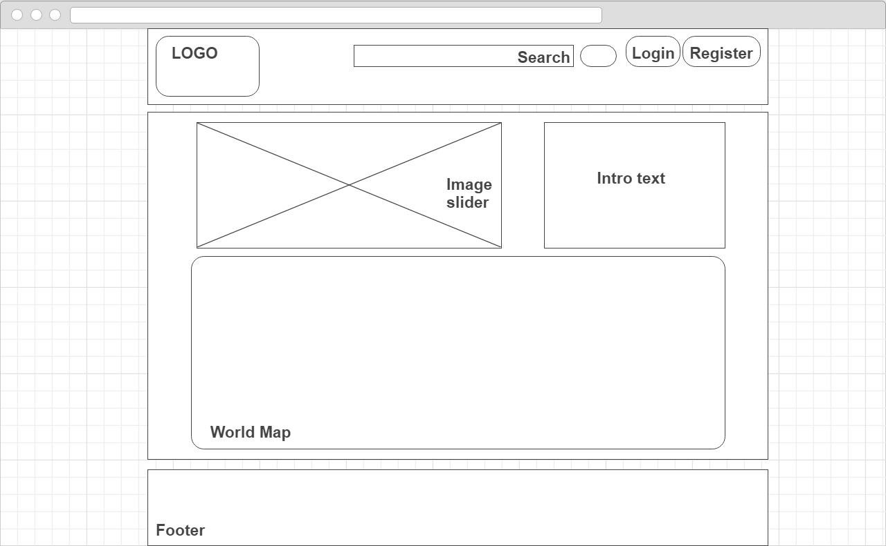
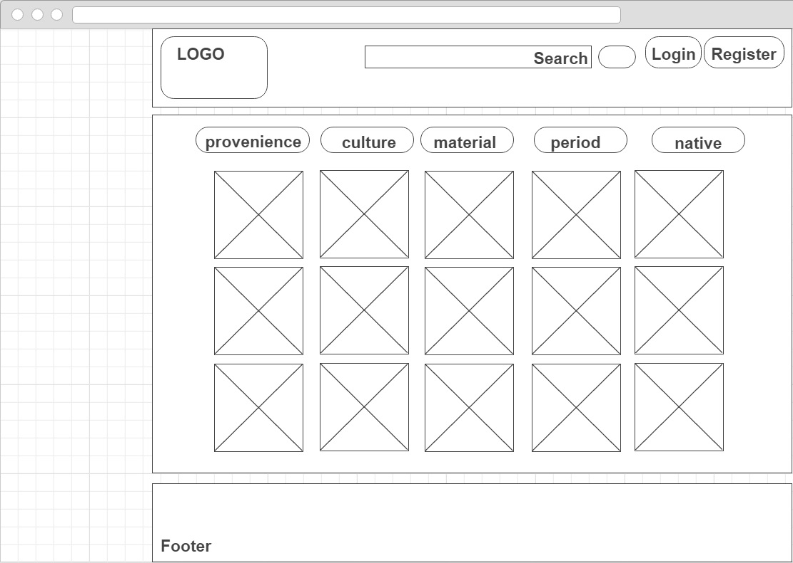

Artifacty
Abstract
Lucrarea prezintă funcționalitătile principale ale aplicației web Artifacty, ce realizează managementul informațiilor privitoare la colecții de artefacte arheologice, structurate pe tipuri și roluri, conform localizării geografice.
Cuvinte cheie: aplicație web, artefacte, arheologie, meta-date, statistică, design responsiv, import, export
Cuprins:
Descrierea proiectului
Proiectul de față îşi propune dezvoltarea unei aplicații web, care va gestiona și realiza managementul informaţiilor privitoare la colecții de artefacte arheologice. Acestea vor fi structurate în funcție de tipul, rolul și localizarea geografică a acestora.
Pentru fiecare artefact se vor atașa meta-date care să indice autorul, dacă există, licența de utilizare, valoarea și anul descoperirii. De asemenea, se vor putea stabili diverse legături între anumite artefacte, ce pot facilita cautările anumitor categorii de interes.
Se vor oferi situații statistice referitoare la resursele stocate: toate artefactele de tip masca mortuară descoperite în secolul XX în Africa, ori cele care nu au fost înca datate sau cercetate. Fiecare utilizator va avea la dispoziție mecanisme de căutare și filtrare, care îl va ajuta să selecteze doar anumite categorii dorite de artefacte. Serviciile cartografice pentru ilustrarea localizării geografice a fiecărui artefact vor oferi utilizatorului o experiență de utilizare captivantă.
Se va folosi un design responsiv al interfeței Web, iar datele procesate vor putea fi importate sau exportate în format XML sau CSV.
Tehnologii folosite
În implementarea proiectului, se vor folosi numeroase tehnologii actuale, cu ajutorul cărora vom integra componentele aplicației:
- HTML/CSS: HTML (HyperText Markup Language) este unul din primele elemente fundamentale ale WWW (World Wide Web) ce descrie formatul primar în care documentele sunt distribuite şi văzute pe Web.
- PHP și JavaScript: pentru a oferi funcționalitate sporită și interactivitate cu clientul. Scripturile Javascript sunt introduse in pagina HTML si sunt interpretate si executate de browser. Javascript poate fi considerat o unealtă foarte bună pentru controlul conținutului paginilor în funcție de data, ora, sistemul de operare sau browserul utilizatorilor, pentru realizarea de site-uri interactive, care să comunice cu vizitatorii, site-uri dinamice, dar și pentru validare a datelor primite din formulare, dar nu numai atât, acestea fiind doar cateva din posibilitățile pe care le oferă acest limbaj.
- MySQL: va face legătura dintre baza de date și interfață. MySQL este un sistem de baze de date funcțional independent. În MySQL, spațiul alocat pe discul serverului este în funcție de tipul de date.
Structura site-ului


-
Homepage
Aceasta pagina este cea care il intampina pe utilizator la prima accesare a aplicatiei.
Aceasta pagina va cuprinde o descriere a intregii aplicatii ,a functionalitatilor oferite.
In partea de sus , in coltul din dreapta, vom avea un buton care va permite utilizatorului sa se logheze si un alt buton cu care se va putea inregistrare in cazul in care nu are un cont existent.
In centrul paginii va fi incarcat un document de tip SVG(Scalable Vector Graphics) care va reprezenta o harta a lumii cu granitele tuturor tarilor delimitate. Cand utilizatorul va plana cu mouse-ul asupra lor, in coltul stanga jos al hartii va aparea un container cu numele tarii respective. Utilizatorul va putea apasa pe una din aceste tarii iar la apasare va fi redirectionat care alta pagina. Aceasta pagina va contine toate obiectele arheologice ale zonei/tarii selectate la pagina anterioara.
-
Register
Aceasta pagina prezinta formularul de inregistrare pe site. Utilizatorul va trebui sa furnizeze urmatoarele informatii :
- Nume
- Parola
- Confirmarea Parolei
-
Login
Aceasta pagina reprezinta logarea utilizatorului pe website cu un cont existent.
In caz de succes va fi redirectionat catre home page.
-
Region
Pe aceasta pagina utilizatorul va putea vizualiza obiectele/artefactele regiunii selectate pe prima pagina.
Aici i se vor oferi diverse filtre precum : regiune, provenienta, cultura, material, lungime, latime, perioada. Utilizatorul va putea apasa pe oricare dintre obiecte unde va fi redirectionat catre o pagina unde va putea vizualiza detaliile si imaginile respectivului obiect.
-
Obiect
Aceasta pagina are scopul de a prezenta imagini si detalii ale obiectului selectat.
Utilizatorul va putea vizualiza toate detaliile precum - numele obiectului, cultura, provenienta, materialul din care este facut, perioada, ascensiune, creator, descriere, zona de cultura, tehnica, descrierea obiectului si desigur imagini la o rezolutie cat mai mare.
Sub toate aceste date va fi creat un buton - Adauga in lista- care are ca scop adaugarea obiectului in lista utilizatorului daca acesta este logat. In cazul in care nu este logat el va fi redirectionat catre pagina de login.
-
Administrare
Aceasta pagina are scopul de a ii permite administratorului de a manageria baza de date


Bibliografie
- https://www.khanacademy.org/
- https://www.codecademy.com/
- http://www.w3schools.com/
- http://forum.codecall.net/
- http://www.phpclasses.org/
- Atelier de programare în reţele de calculatoare, Polirom, Iaşi, 2001